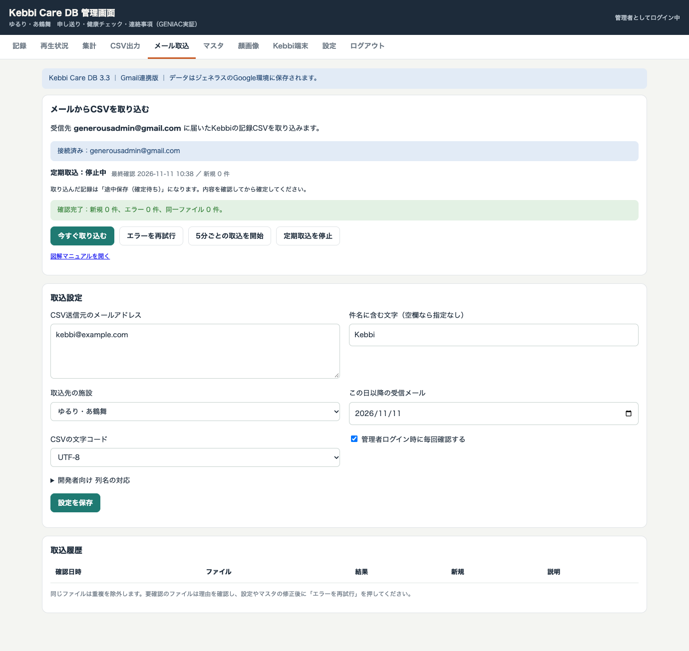

KEBBI CARE DB 3.3 ／ 最初にお読みください
使い始めるまでの流れ
最初にジェネラスのGoogle環境へ設置します。設置後は、届いたCSVを約5分ごと、または管理者ログイン時に取り込めます。
この作業をする人
generousadmin@gmail.com にログインできる管理担当者。初回のGoogle認証は、このアカウントの所有者が操作します。
準備するもの
- パソコンとインターネット接続、Google Chrome等のブラウザ
- generousadmin@gmail.com のログイン手段
- ジェネラスの利用者・職員マスタ登録シート（XLSX）
- KebbiのCSV送信元メールアドレス（後から登録できます）
この順番で進めます
2頁 アカウント選択3頁 ファイル貼付け4頁 Gmailサービス5頁 Google認証6頁 本番URL発行7頁 マスタ登録8頁 メール取込設定9頁 日常操作と確認
公開デモは架空データ用です。実データは、設置後のGoogle側の本番管理画面で扱います。図は操作箇所を示す説明図で、Googleの画面表示は時期や言語によって異なる場合があります。
KEBBI CARE DB 3.3 ／ 初期設定
Googleアカウントを選ぶ
受信先と同じGoogleアカウントで、管理アプリの置き場所を作ります。
- Googleの右上のアカウントアイコンを押します。generousadmin@gmail.com を選びます。表示されない場合は「別のアカウントを追加」からログインします。
- Google Apps Script を開き、新しいプロジェクトを押します。
- 上部のプロジェクト名をジェネラス Kebbi管理に変更します。
ここで確認
別の会社・開発者のアカウントでは作成しないでください。取込処理は設置したアカウントで動きます。受信先と異なる場合、アプリは取込を止めて理由を表示します。
設置用ファイルを開く
環境設定ガイドを別のタブに開いておきます。「内容をコピー」ボタンを使うと、ファイルの全文をコピーできます。
https://c7313y-rgb.github.io/kebbi-care/db-demo/setup.html
コピーできない場合は「設置用ZIP」を保存・展開し、各ファイルをテキストエディタで開いて全文をコピーします。
KEBBI CARE DB 3.3 ／ 初期設定
プログラムを貼り付ける
まず3つのファイルを用意します。ファイル名と種類を合わせてください。
| Apps Scriptでの操作 | 貼り付ける内容 |
|---|
| 最初からある Code.gs を開く | ガイドの Code.gs を全文コピーして置き換え |
「＋」→「スクリプト」
名前は MailImport | MailImport.gs の全文を貼り付け |
「＋」→「HTML」
名前は Index | Index.html の全文を貼り付け |
- 対象ファイルの編集欄を押します。
- Windowsは Ctrl+A、Macは ⌘A で全文を選び、コピーした内容を貼り付けます。
- 保存ボタン、または Ctrl+S／⌘S で保存します。
ファイル名を確認
一覧に Code.gs・MailImport.gs・Index.html の3つが並べば、このページの作業は完了です。新規作成時の名前欄では拡張子を重ねて入力しません。
公開デモ用の runtime.js や sheets.js は貼り付けません。環境設定ガイドにある本番用の4ファイルだけを使用します。
KEBBI CARE DB 3.3 ／ 初期設定
Gmailサービスを有効にする
4つめの設定ファイルを貼り付け、Gmailを読み取れる構成にします。
- 左側の歯車「プロジェクトの設定」を開きます。
- 「appsscript.json マニフェスト ファイルをエディタで表示する」にチェックを入れます。
- エディタに戻って appsscript.json を選び、ガイドの同名ファイルの内容で全文を置き換えて保存します。
- 左側の「サービス」に Gmail API があることを確認します。なければ「サービス ＋」→「Gmail API」→ バージョン v1 →「追加」です。
この設定で許可すること
Gmailの読み取り、DB用スプレッドシートの読み書き、アプリ既存機能のDrive利用、定期実行の管理です。メールの送信・削除・既読変更は行いません。
開発者が別のGoogle Cloudプロジェクトを指定する場合
そのプロジェクトでもGmail APIを有効にします。新規作成したApps Scriptの標準環境をそのまま使う場合は、通常この追加操作は不要です。
KEBBI CARE DB 3.3 ／ 初期設定
Googleの許可を与える
この操作で、ジェネラスの受信箱と保存先DBを使えるようにします。初回だけ必要です。
- 上部の関数の選択欄で setupMailImport_ を選び、実行を押します。
- 許可が必要と表示されたら権限を確認へ進み、generousadmin@gmail.com を選びます。
- 作成したプロジェクト名と権限の内容を確認し、必要な権限を許可します。権限の選択画面が出る場合は、必要な項目をすべて許可します。
- 処理が終わったら実行ログを開き、「メール取込の準備完了」と表示されたことを確認します。
管理キーを控える
初回の実行ログに「管理キー」が表示されます。管理画面へのログインに使うため、会社の安全な保管場所に控えます。例：A-••••••••（この例は使えません）。
警告やエラーが出たとき
「Googleで確認されていません」が出る場合は、いま自社で作ったプロジェクトかを確認してください。自社で作成したことを確認できる場合は「詳細」から自分のアプリへ進み、許可画面を開きます。社内ルールで許可できない場合はGoogle管理担当者に相談します。
「実行アカウントが違う」は、別アカウントで作成・実行しています。2頁へ戻ります。「Gmail APIが未設定」は4頁へ戻ります。
管理キーを紛失した場合は管理担当者が rotateKeys_ を実行できます。再発行すると以前のキーは使えなくなります。
KEBBI CARE DB 3.3 ／ 初期設定
本番管理画面のURLを発行する
Google側の本番アプリを公開し、いつもの入口ページから開けるようにします。
- 右上のデプロイ → 新しいデプロイを開き、種類をウェブアプリにします。
- 実行するユーザーは自分、アクセスは最初は自分のみを選び、デプロイします。
- /exec で終わるウェブアプリURLをコピーします。テスト用の /dev URLは使いません。
- 管理アプリの入口を開き、本番管理画面URLへ貼り付けて「URLを保存して本番アプリを開く」を押します。
- 5頁で控えた管理キーを入力してログインします。
完了の目印
「Kebbi Care DB 3.3 ｜ Gmail連携版」と表示されます。「デモ版：架空データ」と表示される画面は練習用です。
「自分のみ」の設定では generousadmin@gmail.com でログインしたブラウザを使います。複数職員へ開放する場合やKebbiからAPIへ直接接続する場合は、開発者が公開範囲と認証方式を別途確認します。メール取込だけなら、この初期設定で運用できます。
KEBBI CARE DB 3.3 ／ 初期設定
利用者と職員のマスタを登録する
CSVにある利用者ID・職員IDと、登録済みマスタのIDが一致している必要があります。
- 本番管理画面のマスタを開きます。
- ジェネラスのGENIAC実証PoC マスタ登録シート（XLSX）を選びます。
- 取込前の人数や注意事項を確認し、取り込むを押します。
- 利用者・職員の一覧を確認します。CSVの利用者IDと職員IDが一覧にあること、記録する職員に入力権限があることを確認します。
IDが一致しないCSVは取り込みません
氏名や行番号からIDを推測して登録することはありません。CSVとマスタのIDを合わせてから再試行します。
7項目の名称も確認します
「設定」で、食事・排泄・睡眠などの7項目名をジェネラスの運用に合わせます。旧形式の申し送りCSVでは「項目」列の値を、この名称と一致させます。「該当せず」は固定です。
XLSXのマスタ取込はマスタ全体を置き換える操作です。初回登録後に再取込する場合は、内容を確認してから実行します。記録・再生履歴は消えません。
KEBBI CARE DB 3.3 ／ 初期設定
Kebbiの送信元を登録する
受信先は generousadmin@gmail.com で固定です。ここに入力するのは、KebbiがCSVを送る側のメールアドレスです。

画面例：模擬Gmail環境で撮影。kebbi@example.com は説明用で、実際の送信元に置き換えます。1 設定を入力
「メール取込」を開き、送信元を入力。件名は必要な場合だけ指定。取込先の施設、開始日、文字コードを選びます。
2 保存して試す
「設定を保存」→「今すぐ取り込む」。履歴が「取込済み」になり、記録が増えることを確認します。
3 自動取込を選ぶ
「5分ごとの取込を開始」を押すと、画面を閉じても定期確認します。「管理者ログイン時に毎回確認する」をオンにすると、次回の管理者ログイン時にも確認します。
送信元は後から追加・変更できます。開始日より前のメールは対象外です。1ファイル1MB・500行まで、1回20メールまでを処理します。件数が多い場合は次の定期実行へ続きます。
KEBBI CARE DB 3.3 ／ 運用
日常操作と困ったとき
日常は本番アプリを開き、取込結果と記録の内容を確認します。CSVは自動で「途中保存（確定待ち）」として登録されます。
① 本番アプリを開く② メール取込の履歴を見る③ 記録を確認して確定
取り込んだ記録は「記録」画面に表示されます。記録日時が古い場合は、一覧の期間条件も変更してください。同じCSVを再送しても二重登録しません。
| 表示・状況 | 行うこと |
|---|
| 新規0件 | 送信元、件名、開始日を確認。既に取り込んだファイルなら正常です。 |
| 利用者ID・職員IDが不明 | マスタとCSVのIDを合わせ、入力権限も確認。「エラーを再試行」を押します。 |
| 文字コードが一致しない | UTF-8／Shift_JISを選び直して保存し、エラーを再試行します。 |
| 列数・見出しが不正 | CSVを出力し直します。列名が違う場合は開発者が「列名の対応」を設定します。 |
| 既存記録と内容が異なる | 自動上書きはしません。既存記録を確認し、管理画面で訂正するか、別の記録なら一意のIDにして再送します。 |
| 定期取込が止まった | 「メール取込」の最終確認とエラーを確認。権限が失効した場合は5頁の認証をやり直します。 |
初回の動作確認
- 送信元から、登録済みIDを使ったテストCSVを受信した
- 「今すぐ取り込む」で履歴と記録に表示された
- 同じCSVの再取込で記録が増えなかった
- 画面を閉じて新しいCSVを受信し、次の定期実行後に増えた
- 必要な記録を担当者が確認し、確定できた
メール原本はGmailに残します。補助列や過去の受取日時など、管理画面の保存項目にない内容は原本で確認します。元の受取日時をKebbiの再生完了として登録することはありません。
設置・認証の参考：Google Apps Script ウェブアプリ ／ Gmailサービス ／ 定期実行